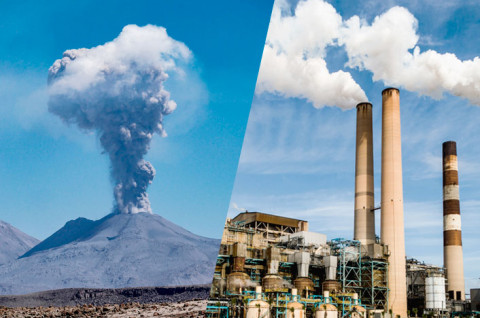

|
En la actualidad la contaminación del medio ambiente y la destrucción de los recursos naturales han suscitado una creciente preocupación en la sociedad, y su debate alcanza a todos los sectores de la comunidad. Ello ha obedecido, fundamentalmente, a la paulatina toma de conciencia acerca de los peligros que la degradación del ambiente entraña para el presente y el futuro de la humanidad, ya que en definitiva, lo que está en juego es la propia supervivencia de la especie humana.
Por otra parte, es bien sabido que a partir de la Revolución Industrial, el hombre pasó definitivamente de una economía basada en el reciclaje a otra sustentada en recursos no renovables, estos últimos particularmente favorecedores a la degradación del medio ambiente.
Como consecuencia de la globalización de mercados, la economía a través de sus procesos de comercialización ha provocado un deterioro ambiental, mismo que ha hecho que el gobierno mexicano adquiera conciencia de lo que es y significa el medio ambiente, así como la necesidad de protección y correcta explotación de los recursos naturales, dentro de los cuales se incluye el petróleo y sus derivados.
La contaminación es uno de los problemas ambientales más importantes que afectan a nuestro mundo y surge cuando se produce un desequilibrio, como resultado de la adición de cualquier sustancia al medio ambiente, que causa efectos adversos en el hombre, en los animales, vegetales o materiales expuestos a dosis que sobrepasen los niveles aceptables en la naturaleza.
La contaminación puede surgir a partir de ciertas manifestaciones de la naturaleza (fuentes naturales) o bien, debido a los diferentes procesos productivos del hombre (fuentes antropogénicas) que conforman las
actividades de la vida diaria.
Las fuentes que generan las contaminaciones de origen antropogénico más importantes son: industriales (frigoríficos, mataderos y curtiembres, actividad minera y petrolera), comerciales (envolturas y empaques), agrícolas (agroquímicos), domiciliarias (envases, pañales, restos de jardinería) y fuentes móviles (gases de combustión de vehículos).
El progreso tecnológico y el acelerado crecimiento demográfico,producen la alteración del medio, llegando en algunos casos a atentar contra el equilibrio biológico de la Tierra. No es que exista una incompatibilidad absoluta entre el desarrollo tecnológico, el avance de la civilización y el mantenimiento del equilibrio ecológico, pero es importante que el hombre sepa armonizarlos. Para ello es necesario que proteja los recursos renovables y no renovables y que toma conciencia de que el saneamiento del ambiente es fundamental para la vida sobre el planeta.
La contaminación atmosférica es un importante factor de riesgo para una serie de enfermedades relacionadas con la contaminación, como las infecciones respiratorias, las enfermedades cardíacas, la EPOC, los accidentes cerebrovasculares y el cáncer de pulmón. |
La contaminación atmosférica consiste en la presencia de materias o formas de energía en el aire que pueden suponer un riesgo, daño o molestia de diferente gravedad para los seres vivos. Entre las consecuencias directas de la contaminación atmosférica, se podría destacar el desarrollo de enfermedades y afecciones en los seres humanos y la biodiversidad, así como la pérdida de visibilidad en zonas de grandes concentraciones o la aparición de olores desagradables.
La producción, el desarrollo del transporte y el uso de a partir de la Revolución Industrial ha disparado los niveles de dióxido de carbono y otros gases contaminante en la atmósfera. Esto ha provocado que la contaminación en el aire sea ya un problema ambiental global.
La contaminación atmosférica consiste en la presencia de materias o formas de energía en el aire que pueden suponer un riesgo, daño o molestia de diferente gravedad para los seres vivos. Entre las consecuencias directas de la contaminación atmosférica, se podría destacar el desarrollo de enfermedades y afecciones en los seres humanos y la biodiversidad, así como la pérdida de visibilidad en zonas de grandes concentraciones o la aparición de olores desagradables.
La producción, el desarrollo del transporte y el uso de a partir de la Revolución Industrial ha disparado los niveles de dióxido de carbono y otros gases contaminante en la atmósfera. Esto ha provocado que la contaminación en el aire sea ya un problema ambiental global.
Una concentración
elevada de gases de efecto
invernadero es altamente nocivo
para la salud del planeta
y sus habitantes.
Estas son los principales gases contaminantes:
El monóxido de carbono
El dióxido de carbono
El dióxido de nitrógeno
El óxido de nitrógeno
El ozono a nivel del suelo
El material particulado
El dióxido de azufre
Los hidrocarburos
|
Fuentes de Contaminación Atmosférica
Son todas aquellas actividades, procesos u operaciones capaces de producir contaminantes del aire.
Se agrupan en:
·Fuentes puntuales que se caracterizan por ser estacionarias o estar en un punto fijo como las plantas de energía, industrias químicas, refinerías de petróleo y fábricas.
·Fuentes móviles que abarcan todas las formas de transporte y los vehículos automotores.
·Fuentes de área. Todas aquellas actividades que en conjunto afectan la calidad del aire, como el uso de madera, imprentas, tintorerías o actividades agrícolas, por mencionar algunas
·Fuentes naturales o biogénicas. Son resultado de fenómenos de la vida animal y vegetal, como las emisiones producidas por los volcanes, océanos y la erosión del suelo. Consecuencias:
·Enfermedades respiratorias como el asma, la bronquitis o el cáncer de pulmón.
·Enfermedades dermatológicas, tal vez menos conocidas, la contaminación atmosférica también afecta negativamente a la piel, favoreciendo su envejecimiento prematuro, deshidratación o formación de acné
·Cambio climático a causa de los gases de efecto invernadero que se acumulan en la atmósfera.
·Disminución de la capa de ozono, que actúa como una capa protectora ante la radiación ultravioleta.
·Lluvia ácida, responsable de la destrucción a gran escala de bosques y suelos. Además, es responsable de la acidificación de algunos lagos y de la erosión de edificios, al atacar a algunos metales presentes en los materiales de los que están hechos.
 En cuanto al origen del contaminante, se distinguen dos tipos:
Contaminantes primarios. Provienen directamente de fuentes de emisión como el plomo, monóxido de carbono, óxidos de azufre, óxidos de nitrógeno, hidrocarburos y material particulado; y
Contaminantes secundarios. Originados en el aire por la interacción entre dos o más contaminantes primarios o por sus reacciones con otros componentes de la atmósfera; como en los casos del ozono, del peroxiacetil-nitrato, de los sulfatos, de nitratos, así como del ácido sulfúrico.
Para la medición de la calidad del aire, si el contaminante es perjudicial para la salud y el bienestar de las persona, se les identifica como contaminantes criterio. Si no lo son, se les llama contaminantes no criterio. |
|
La generación de residuos y una inadecuada gestión de los mismos también tiene como resultado una fractura en la armonía entre los seres humanos y el medio natural. Los residuos pueden suponer una fuente muy importante de degradación del medio ambiente (contaminación atmosférica, contaminación de los suelos, contaminación de las aguas, alteración de los ecosistemas, problemas de salud, etc.), razón por la cual se hace necesario clausurar todos aquellos vertederos que no reúnen las condiciones necesarias para depositar los productos residuales de las diferentes actividades socio-económicas. Pero por muy correcta que sea la gestión final de los residuos, esta nunca eliminará todos los potenciales impactos ambientales.
Por esta razón se tiene que apostar por la valorización de la mayor parte posible de los residuos generados mediante su reutilización y/o su reciclaje. Ahora bien, aún más importante que este reciclaje, fruto de una recogida selectiva en origen, es la reducción de los residuos generados. Y de la cantidad generada sólo una pequeña parte tendría que ir a disposición final, ya sea una depósito controlado o bien una planta de incineración de residuos.
La adecuada disposición de residuos y el consumo sostenible son acciones fundamentales para reducir la emisión de gases de efecto invernadero, que aumentan el calentamiento global, y disminuir la contaminación en el aire, el suelo y el agua.
·Logramos alcanzar y cumplir con todos nuestros objetivos
·Generamos un cambio en nuestros compañeros e incluso fomentamos a que los demás docentes pudieran ser participes de este proyecto y quizá también un cambio en ellos
·Se separaron correctamente los residuos y así pretendemos aunque sea de poco a poco contribuir a la mejora del ambiente https://www.ecologiaverde.com/contaminacion-atmosferica-causas-consecuencias-y-soluciones-1247.html
https://www.nationalgeographic.com.es/ciencia/impacto-contaminacion-salud-y-calidad-vida_16348
https://ecocosas.com/cambio-climatico/contaminacion-atmosferica/
|